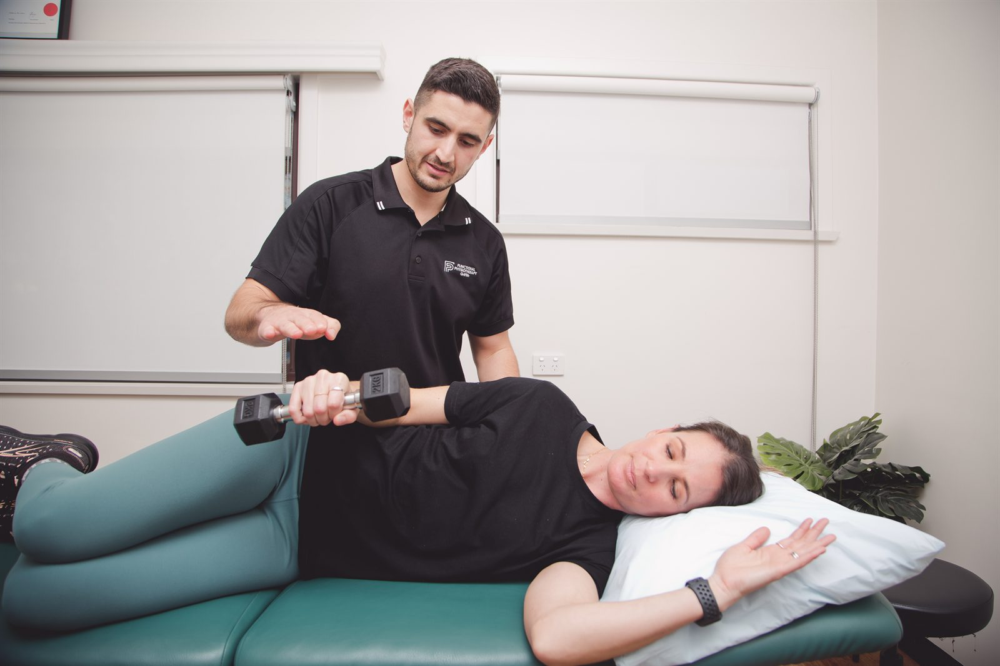
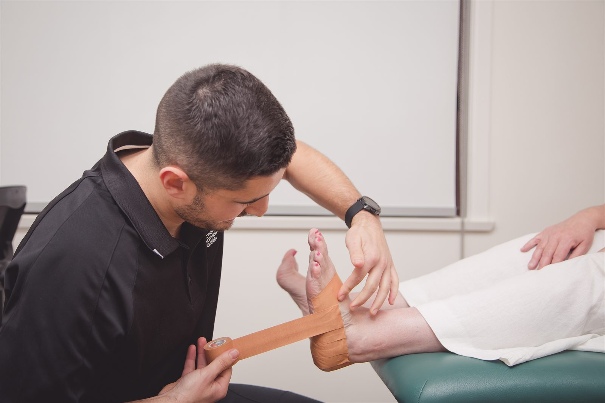

Sports physiotherapy covers injury assessment and rehabilitation for all types of athletes. We help you work out what training is safe now and use sport-specific testing to guide your return to competition.

A hamstring strain, a swollen ankle and a painful shoulder each need a different plan. Assessment starts with how the injury happened and what your sport asks of you.
Tell us what you were doing when the injury happened, what you felt and how it changed afterwards. That history and a physical examination often give us enough information to start treatment. A mild hamstring strain and an injury to the tendon near the pelvis can both hurt at the back of the thigh, but need different rehabilitation. If the diagnosis is unclear or a scan would change treatment, we will discuss further assessment.
Early rehabilitation balances protection with movement. Some injuries need a period of rest or restricted weight-bearing; others tolerate exercise sooner. We can adapt training around those limits, for example using a bike while a running injury settles, if that is comfortable and safe.
Pain can settle before strength and speed have recovered. A hamstring may feel comfortable during daily activities but still struggle with sprinting. Strength testing and gradual exposure to the movements your sport demands help inform the return decision, alongside healing time and your confidence. They cannot guarantee that another injury will not happen.
Each phase depends on the injury, healing time and how you respond to increasing demands. We review strength and function before progressing.
Manage pain and swelling, restore movement as appropriate and choose safe ways to maintain fitness while the injury heals.
Progressive loading of the injured tissue through full range, until strength and endurance measure up against the uninjured side and against the demands of your position.
Practise jumping, landing and changing direction, then build acceleration and braking at the speeds your sport requires.
Objective, sport-specific criteria: strength symmetry, hop and jump testing, speed exposure, contact tolerance where relevant, before you are cleared for full training and then competition.
The Illawarra sporting calendar gives players little downtime. Rugby league and football involve sprinting and contact; netball adds repeated landing and pivoting. Summer cricket places different demands on a bowler’s shoulder and back, while surf life saving brings swimming, paddling and beach running. Your rehabilitation needs to prepare you for those particular demands.
A hamstring injury in round four leaves a different amount of preparation time from the same injury in the second-last round. Tell us about upcoming trials or finals so we can discuss what is realistic. A competition date matters to the plan, but it does not change the time an injury needs to heal.
With your permission, we can share training limits and progress with your coach so everyone is working towards the same return plan.

A previous injury can increase the risk of another, particularly for injuries such as hamstring strains and ankle sprains. Rehabilitation should address any remaining weakness or loss of control.
Returning to a full training week can be a large jump from rehabilitation exercises. Build that exposure gradually and keep up the strength work your injury requires. Re-injury risk also depends on the injury itself, previous injuries and the demands of the sport; no program removes it entirely.
For athletes coming off a history of niggles, or heading into a pre-season, we run a movement and strength screen: single-leg strength and control, hamstring and calf capacity, ankle range, hip and shoulder strength, and the specific movements your sport demands. The findings help us choose exercises and training changes. A screen cannot predict every injury.
Seek prompt assessment after a pop with rapid swelling, or if a joint locks or repeatedly gives way. If you cannot bear weight after an injury, seek urgent medical assessment to check for a fracture or other significant damage. Persistent pain that is limiting training also deserves assessment.
Read more about ACL rehabilitation, running injuries and dry needling.
Prehab, post-operative rehabilitation and criteria-based return to sport after an ACL injury.
Read moreServiceDiagnosis, load management and a staged return-to-running plan for runners of every level.
Read moreServiceDry needling for selected muscle-related symptoms, used alongside physiotherapy and exercise.
Read moreBook a sports injury assessment with Chris in Dapto to discuss treatment and your return to training.